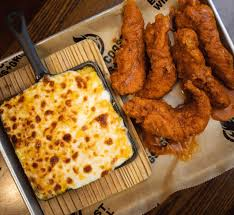
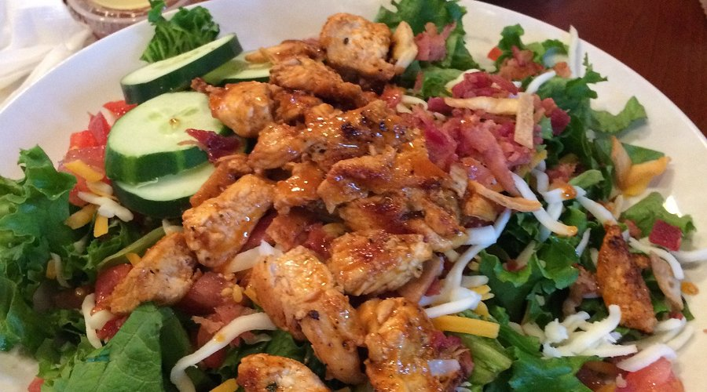

Location: [338 Tate St, Greensboro]
Specialties:
[Known for their flavorful wings, diverse menu, and vibrant atmosphere. They offer a variety of wing flavors, from classic buffalo to unique house specialties, as well as a range of other dishes including burgers, salads, and sandwiches.]
Hours: [11:00 AM - 10:00 PM, Monday to Friday; 12:00 AM - 10:00 PM, Saturday and Sunday]
Wings
[A flavorful and satisfying dish that's perfect for sharing. These wings are seasoned to perfection and served with a side of ranch or blue cheese dip with carrots and celery.]

Tenders
[Crispy and tender chicken tenders, lightly seasoned and perfectly cooked. Served with a side of ranch or honey mustard dip.]

Salad
[A fresh and healthy option for those looking for something light. This salad is made with locally sourced ingredients and comes with a variety of toppings and dressings to choose from.]